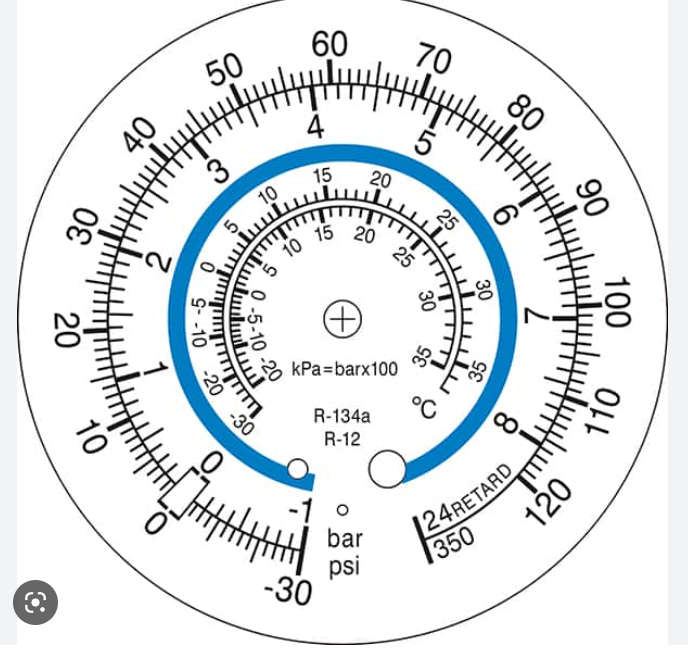
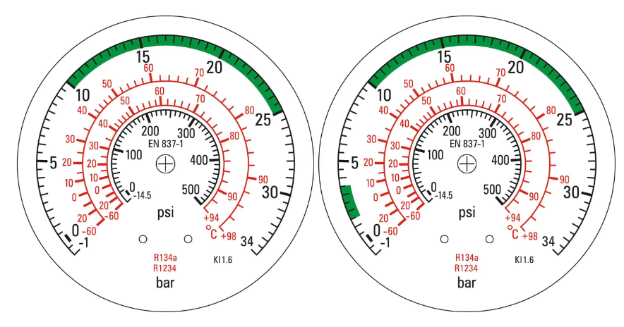

Thème / DomaineLecture de relevés — HP/BP/températures
Module THÉORIE S7-T1 · 2 hLecture de relevés
SéquenceS7 · sem. 24
Nom________________
Prénom________________
Date________________
Positionnement01234
Tâches
Pas de tâche d'atelier ce jour — cours en classe entière ; on exploite les relevés que VOTRE binôme a pris la semaine dernière sur le groupe, en atelier (S7-F1), notés dans votre carnet F3
Ce que je vais apprendre
Lire un tableau collectif de vrais relevés de la classe, les confronter à la réglette P/T et aux plages de la charte, repérer une valeur qui « sonne faux » (erreur ou vrai problème ?)
Savoir-être
Honnêteté du relevé rapporté · rigueur du calcul · esprit critique face à SA propre mesure · écoute des autres binômes
Compétence
Confortement — vers MaîtriseC4.5 Mesurer, comparer des grandeurs — S5.1 augmenté
Accroche — les relevés du groupe de l'arrière-boutique : tout va bien ?
La semaine dernière (S7-F1), chaque binôme a posé le manifold sur un groupe de l'atelier, l'a purgé
brièvement, puis a relevé les pressions HP et BP et des températures, sous la supervision directe du
professeur. Ces relevés sont notés dans votre carnet F3. Aujourd'hui, personne ne pose de manomètre :
vous allez apporter vos relevés, et toute la classe va les mettre en commun dans un grand tableau, pour
répondre à une seule question, pour chaque groupe : « est-ce que tout va bien à l'intérieur ? »
Question de départ — Avec seulement deux pressions et deux
températures, sans jamais ouvrir le circuit, comment peut-on dire qu'une installation « va bien » ? Notez
une première idée, même incomplète.
D'après moi, on peut le savoir en _____________________________________.
Ce que vous savez déjà (rappel S4 et S5-T2)
En S4, vous avez appris à lire, sur une réglette P/T,
la température de changement d'état qui correspond à une pression. En S5-T2, sur des relevés
simulés fournis par le professeur, vous avez appris à calculer une surchauffe (SC) et un
sous-refroidissement (SR), puis à comparer le résultat aux plages de la charte : SC 5-10 K
et SR 4-8 K. La dernière phrase de ce cours disait : « en S7-S8, vous poserez de vrais manomètres et
vous mesurerez pour de bon. » Nous y sommes. Aujourd'hui, les pressions et les températures ne sont
plus données dans un énoncé : ce sont les vôtres, prises en atelier la semaine dernière.
Ce qui change depuis S5-T2 — En S5-T2, une erreur de calcul ne
« coûtait » qu'un exercice raté. Aujourd'hui, si votre relevé est faux, c'est TOUT le tableau de la classe
qui devient difficile à lire. La rigueur du relevé (S7-F1) et l'honnêteté de ce que vous rapportez comptent
autant que le calcul lui-même.
DÉCOUVERTE — la méthode du jour : exploiter les relevés RÉELS de la classe
Consigne — Sortez votre carnet F3. Quand votre binôme est appelé, dictez à
voix haute au rapporteur (ou au professeur) les 4 valeurs relevées en S7-F1 sur votre groupe : la pression
HP lue, la pression BP lue, et les deux températures mesurées (sortie évaporateur, sortie condenseur). Ces
valeurs sont recopiées dans le tableau collectif (annexe pleine page, feuille suivante), que toute la
classe complète en même temps sur sa propre feuille.
Ce qu'il manque encore pour conclure : la réglette P/T
Une pression HP ou BP lue ne dit rien toute seule : il faut la
transformer en température de changement d'état, exactement comme en S4 et en S5-T2, avec la même
réglette que vous connaissez déjà.
Pression lue (bar)
1,3
1,9
2,5
3,1
5,0
9,2
11,0
13,0
15,0
17,0
Température lue (°C)
−40
−30
−22
−18
0
+20
+30
+35
+40
+47
Même réglette qu'en S4/S5-T2, simulée,
indépendante de tout fluide réel : elle sert d'outil de lecture, comme un barème. Si votre pression lue en
atelier ne tombe pas exactement sur une valeur de la réglette, prenez la valeur la plus proche et dites-le
au professeur (interpolation grossière tolérée à ce niveau).
Rappel des deux formules (S5-T2) :
SC = T mesurée sortie évapo. − t0 (BP, réglette)
SR = tk (HP, réglette) − T mesurée sortie cond.
Seuils charte (rappel) — Surchauffe normale : 5 à 10 K. Sous-refroidissement
normal : 4 à 8 K. Un écart hors de ces plages n'est pas forcément une panne : c'est d'abord une
question à se poser.
Question 1 — D'après vous, quelles sont les DEUX raisons possibles pour
lesquelles une case du tableau collectif pourrait paraître « fausse » (hors plage) ? Notez vos hypothèses,
même incomplètes — on y reviendra en feuille 4.
ANNEXE — le tableau collectif de la classe (à remplir en direct)
Une ligne par binôme appelé. Complétez au fur et à mesure de la mise en commun ;
le professeur corrige au tableau, recopiez toute correction.
Poste / groupe
HP lue (bar)
BP lue (bar)
tk réglette (°C)
t0 réglette (°C)
T mesurée sortie évapo. (°C)
T mesurée sortie cond. (°C)
SC ou SR (K)
Verdict (dans / hors plage) — remarque
Poste 1
Poste 2
Poste 3
Poste 4
Poste 5
Poste 6
Poste 7
Poste 8
Poste 9
Poste 10
Poste 11
Poste 12
Chaque binôme ne remplit qu'une seule colonne
SC ou SR selon ce que ses données permettent de calculer (les deux si vous avez les 4 mesures). En cas
de doute sur l'unité ou la lecture, écrivez « à vérifier » plutôt qu'un chiffre inventé.
C'est une case du tableau qui ne peut physiquement pas être
vraie, ou qui est très loin des plages charte sans raison évidente. Exemple : une pression HP lue plus
petite que la pression BP lue est impossible — le compresseur comprime toujours, la HP est toujours
supérieure à la BP. Avant de conclure « la machine a un problème », un professionnel se pose TOUJOURS trois
questions dans l'ordre : ai-je bien lu le cadran ? ai-je bien lu la bonne unité ? est-ce que
quelqu'un d'autre peut vérifier ma lecture sur la même machine ?
Entraînement — Ces 3 mini-cas sont fictifs (construits pour
l'exercice, comme la réglette), pas des relevés réels de la classe. Pour chacun, dites si la valeur vous
semble aberrante et pourquoi (erreur de lecture ? erreur d'unité ? vrai problème possible ?).
1 Mini-cas — le tableau du poste fictif X
HP lue = 9,2 bar · BP lue = 13,0 bar
2 Mini-cas — le tableau du poste fictif Y
t0 réglette = −18 °C · T mesurée sortie évapo. = −29 °C
· SC calculée = −29 − (−18) = −11 K
3 Mini-cas — le tableau du poste fictif Z
tk réglette = +35 °C · T mesurée sortie cond. = +6 °C
· SR calculée = 35 − 6 = 29 K
Rappel de méthode — Un écart énorme et « impossible » (comme le mini-cas 2 ou 3)
est presque toujours une erreur de relevé ou de calcul (signe oublié, mauvaise ligne de la réglette,
soustraction à l'envers), pas une vraie panne. Une vraie anomalie de machine donne en général un écart hors
plage mais raisonnable (quelques Kelvin au-delà du seuil), pas un nombre absurde.
Exercice 1 — Observez la photo d'un manifold ci-dessous (deux
manomètres, comme celui que vous avez manipulé en S7-F1).

Cadran générique de manomètre (banque de cadrans d'entraînement, sans mention
commerciale). D'après le principe des exercices de la série « lecture de manomètres », F. Henninot.
Question
Ma réponse
Quelle est l'unité principale gravée sur le grand cercle extérieur du
cadran ?
Quelle est l'autre unité de pression présente sur le même cadran ?
Par convention professionnelle, de quelle couleur est un manomètre
BP ? Et un manomètre HP ?
Exercice 2 — Lisez les deux cadrans d'entraînement ci-dessous (aiguille
fixe, pour s'exercer à la lecture), puis cherchez la température correspondante sur la réglette de la
feuille 2.
Cadrans d'entraînement (schéma F. Henninot, d'après la structure des exercices
de lecture de manomètres) — l'aiguille est fixe, seule la lecture est demandée : aucune valeur de machine
réelle n'est affirmée ici.
Lecture
Valeur lue (bar)
T° réglette correspondante
Cadran BP → P0 lue
t0 = _____ °C
Cadran HP → Pk lue
tk = _____ °C
Exercice 3 — Observez ce second cadran, muni d'une zone verte.

Cadran générique avec zone verte de fonctionnement normal (banque de cadrans
d'entraînement, sans mention commerciale).
Question
Ma réponse
D'après vous, à quoi sert la zone verte imprimée sur certains cadrans ?
Une aiguille dans la zone verte veut-elle dire, à elle seule, que SC et SR
sont forcément corrects ?
CAS FOURNIS EN SECOURS — pour les binômes sans relevé exploitable
Si votre carnet F3 ne contient pas de relevé exploitable (poste non passé,
feuille perdue, mesure incomplète), traitez ces deux cas fictifs à la place, avec la même réglette
qu'en feuille 2 (celle de S4/S5-T2).
E Cas de secours — poste fictif E
P0 lue = 2,5 bar (BP) · Pk lue = 15,0 bar (HP)
· T mesurée sortie évapo. = −15 °C · T mesurée sortie cond. = +33 °C
Calcul
Résultat
Verdict (dans / hors plage)
t0 (réglette) = _____ °C · SC = _____ − (_____) =
tk (réglette) = _____ °C · SR = _____ − _____ =
F Cas de secours — poste fictif F
P0 lue = 1,9 bar (BP) · Pk lue = 9,2 bar (HP)
· T mesurée sortie évapo. = −25 °C · T mesurée sortie cond. = +19 °C
Calcul
Résultat
Verdict (dans / hors plage)
t0 (réglette) = _____ °C · SC = _____ − (_____) =
tk (réglette) = _____ °C · SR = _____ − _____ =
Rappel — SC hors plage BASSE (< 5 K) = risque de coup de liquide au
compresseur ; SC hors plage HAUTE (> 10 K) = manque de fluide ou détendeur trop fermé probable. SR hors
plage BASSE (< 4 K) = sous-charge probable ; SR hors plage HAUTE (> 8 K) = surcharge ou incondensables
probables. Ces hypothèses de cause seront creusées bien plus tard dans votre formation (diagnostic, S9 et
au-delà) — aujourd'hui, on se contente de les nommer.
Complétez cette fiche avec la correction donnée en classe : c'est votre trace
écrite, à garder pour S7-F2 (tirage au vide réel) et pour toute la suite de votre formation.
Avant de conclure quoi que ce soit sur une machine, je vérifie…
Ce que je retiens
Ai-je lu la bonne unité (bar, pas psi ni mbar) ?
Ai-je lu le bon manomètre (BP pour t₀, HP pour tk) ?
Ma pression lue tombe-t-elle sur (ou près de) la réglette ?
Ma soustraction (SC ou SR) est-elle faite dans le bon sens ?
Le résultat est-il dans une plage raisonnable, même hors charte ?
Une autre personne peut-elle vérifier ma lecture ?
La phrase à retenir
« Un relevé
anormal n'est jamais une conclusion : c'est le début d'une question. »
Et la suite ? — Plus tard dans votre formation
(S9), vous apprendrez à transformer une question sur un relevé en véritable diagnostic : quelle panne,
quelle cause, quelle action. Aujourd'hui, vous avez appris à vous méfier d'un relevé et à le confronter à la
réglette et aux seuils — c'est le premier réflexe du diagnostiqueur, avant même de chercher une panne.
Auto-positionnement
Échelle FrigorX : 0 Non évalué · 1 Non acquis · 2 En cours
d'acquisition · 3 Acquis · 4 Parfaitement maîtrisé. Statut Confortement — vers Maîtrise (C4.5) :
formatif, non remonté École Directe.
Ce que je sais faire
0 Non évalué
1 Non acquis
2 En cours d'acquisition
3 Acquis
4 Parfaitement maîtrisé
C4.5 Lire un tableau de relevés réels, calculer SC ou SR via la réglette, comparer aux
seuils charte et repérer une valeur aberrante Confortement — vers Maîtrise
Compétence non observée ce jour.
Je confonds HP/BP ou SC/SR, même avec de l'aide.
Je calcule avec de l'aide, je ne repère pas seul(e) une valeur aberrante.
Je calcule seul(e) SC ou SR à partir de relevés réels et je repère une valeur qui « sonne faux ».
Comme « Acquis », et j'explique à un camarade pourquoi une valeur est aberrante (erreur ou vrai
problème).
Savoir-être — honnêteté du relevé rapporté, rigueur du calcul, esprit critique sur ma propre
mesure
Non observé.
Je rapporte un relevé sans l'avoir vérifié, je ne participe pas à la
mise en commun.
Je participe mais j'ai besoin d'un rappel pour être rigoureux(se).
Je rapporte honnêtement mes relevés et je vérifie mes calculs avant de conclure.
Comme « Acquis », et j'aide un camarade à repérer une erreur dans son tableau.
Lire un tableau de relevés réels, calculer SC/SR, repérer une valeur aberrante :
01234
Ce cours n'est pas noté sur École Directe :
il prépare le regard du diagnostiqueur, qui se construira pleinement en S9.
D'après : cadrage
pédagogique S7-T1 (méthode « exploitation des relevés réels de la classe », F. Henninot, 19/07/2026) ;
réglette P/T et seuils de surchauffe/sous-refroidissement (charte FrigorX SC 5-10 K · SR 4-8 K), repris à
l'identique de S4 et S5-T2 (F. Henninot, 2026) ; principe des exercices de lecture de cadrans, d'après la
série « EvaL lecture mano » de l'enseignant (02_CAP-IFCA/Bases-Techniques, F. Henninot) ; banque de cadrans
manomètres génériques utilisée en exercice (25 26/vrac fiep 3/Exercices_rapides/manometres — cadrans
d'entraînement sans mention commerciale tierce) ; cadrans d'entraînement à aiguille fixe (feuille 5),
schémas F. Henninot, 2026, aucune valeur de machine réelle affirmée ; carnet de bord F3 (S7) — relevés
réels pris par les binômes en S7-F1. Aucune valeur de pression réelle n'est affirmée dans ce document : les
relevés exploités sont ceux, réels, de la classe ; les cas de secours et les mini-cas d'entraînement sont
fictifs, construits pour l'exercice.